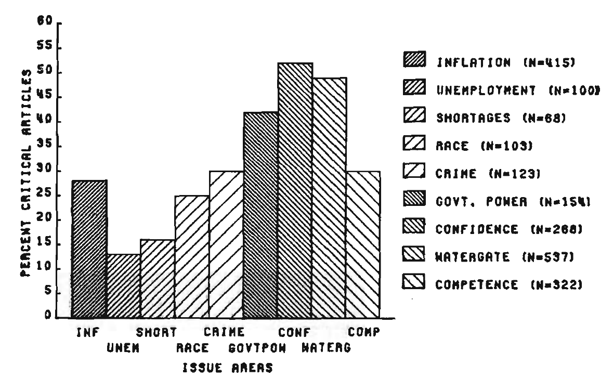
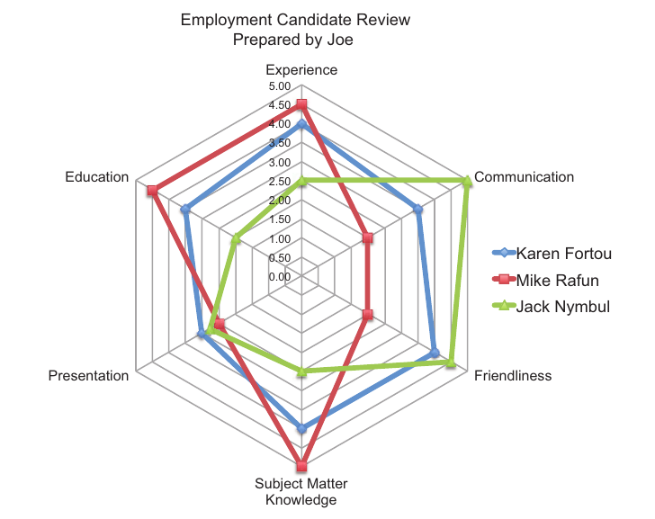
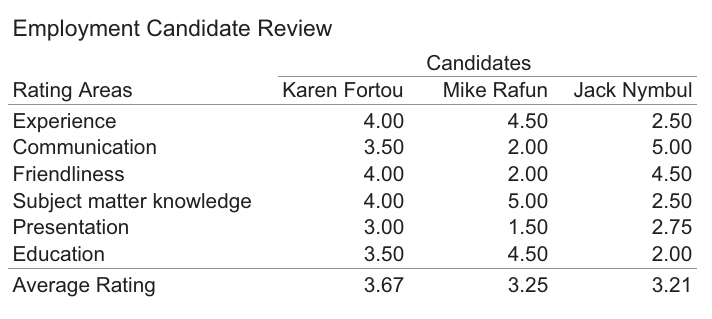
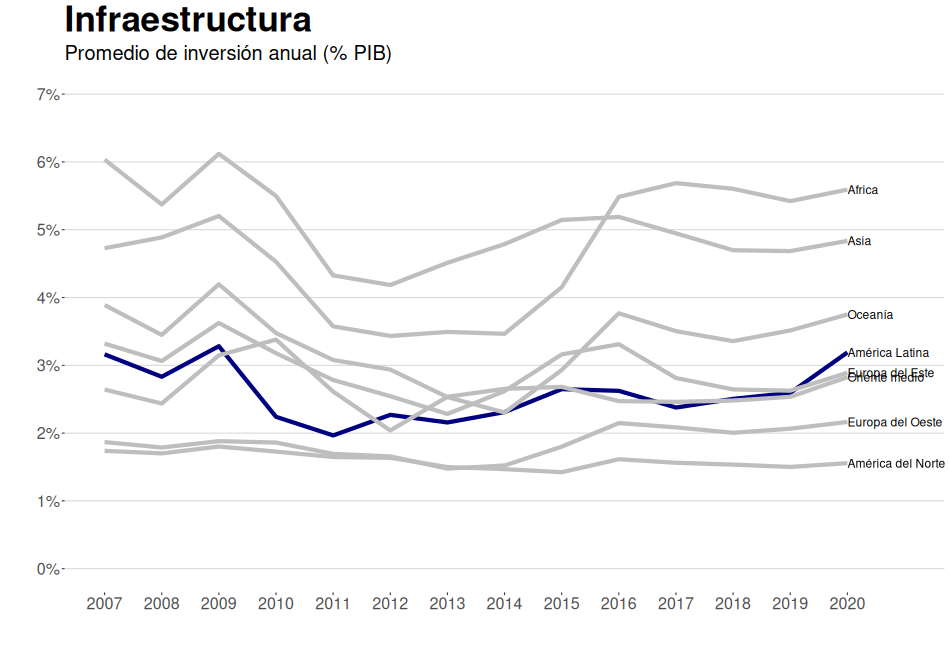
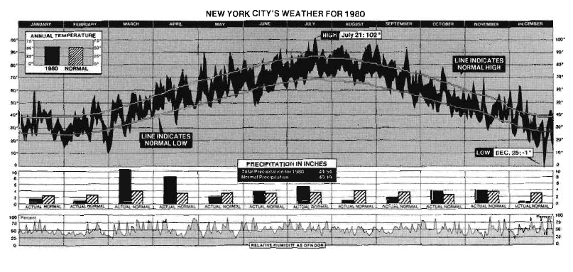
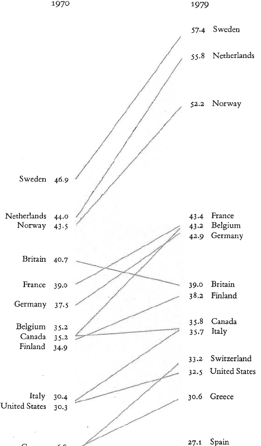
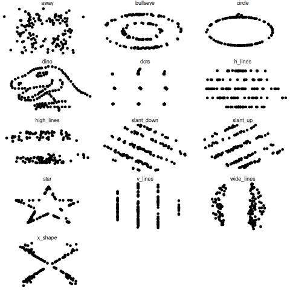
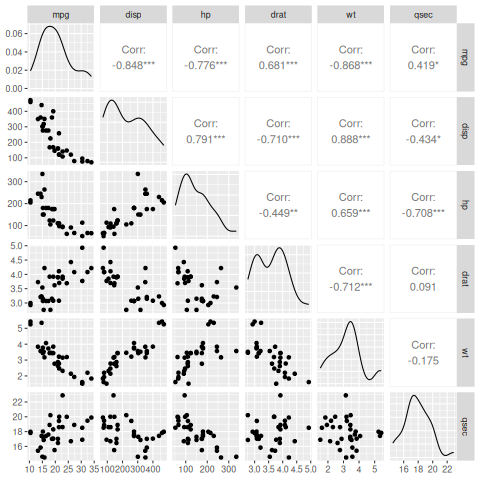

Cómo y cuándo
Antonio Saade
¡Mira mamá, tengo una computadora! - Stephen Few


De vuelta a lo básico

Tabla vs. Gráfico
| Tabla | Gráfico |
|---|---|
| Valores individuales | Patrones, tendencias y excepciones |
| Valores únicos (no series) | Series completas |
| Valores precisos | |
| Más de una unidad de medida | |
| Diferentes niveles de agregación (p.ej. montos y total) |
Un dato, dos datos, muchos datos
A veces se necesita menos detalle y más información agregada.

Cientos de datos - Edward Tufte

Comparaciones - Tufte

Análisis y exploración - El Cuarteto de Anscombe

… y el Datasaurio
| dataset | mean_x | mean_y | std_dev_x | std_dev_y | corr_x_y | |
|---|---|---|---|---|---|---|
| 1 | away | 54.3 | 47.8 | 16.8 | 26.9 | -0.1 |
| 2 | bullseye | 54.3 | 47.8 | 16.8 | 26.9 | -0.1 |
| 3 | circle | 54.3 | 47.8 | 16.8 | 26.9 | -0.1 |
| 4 | dino | 54.3 | 47.8 | 16.8 | 26.9 | -0.1 |
| 5 | dots | 54.3 | 47.8 | 16.8 | 26.9 | -0.1 |
| 6 | h_lines | 54.3 | 47.8 | 16.8 | 26.9 | -0.1 |
| 7 | high_lines | 54.3 | 47.8 | 16.8 | 26.9 | -0.1 |
| 8 | slant_down | 54.3 | 47.8 | 16.8 | 26.9 | -0.1 |
| 9 | slant_up | 54.3 | 47.8 | 16.8 | 26.9 | -0.1 |
| 10 | star | 54.3 | 47.8 | 16.8 | 26.9 | -0.1 |
| 11 | v_lines | 54.3 | 47.8 | 16.8 | 26.9 | -0.1 |
| 12 | wide_lines | 54.3 | 47.8 | 16.8 | 26.9 | -0.1 |
| 13 | x_shape | 54.3 | 47.8 | 16.8 | 26.9 | -0.1 |
Algunos gráficos del Datasaurio

Figura 1: Los gráficos del ’Datasaurio’
Algo más útil

Otra vez